Et tilbageblik på året

Kære følgere.
Squadra Molteni ønsker at sige tak for sæsonen 2017. Tak for at I fulgte med, bakkede op og kommenterede med. Det er vi rigtig glade for.
Her bringer vi et tilbageblik på nogle af årets begivendheder:
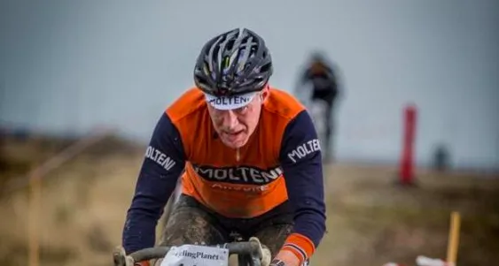
Vi lagde ud med at vise flaget ved en række cykelcrossløb i de kolde vintermåneder.
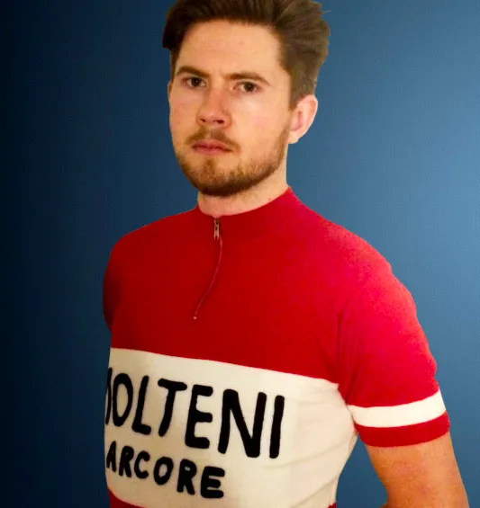
Samtidig kom Mark Petersens “danmarksmestertrøje” hjem fra systuen i Italien.
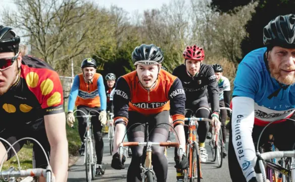
Ved sæsonstarten i det tidlige forår slog Squadra Molteni til. Christian Vaaben vandt Retro Fondo.
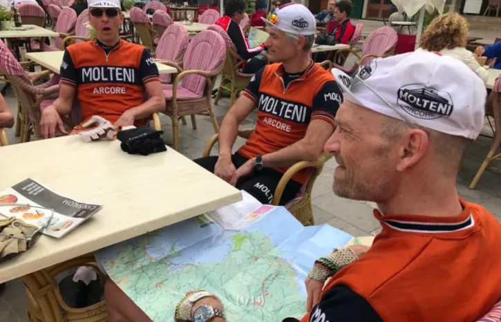
Lidt senere stod der træningslejr på programmet. Kaptajn Bjørnsteen styrede bjergruterne med hård hånd.
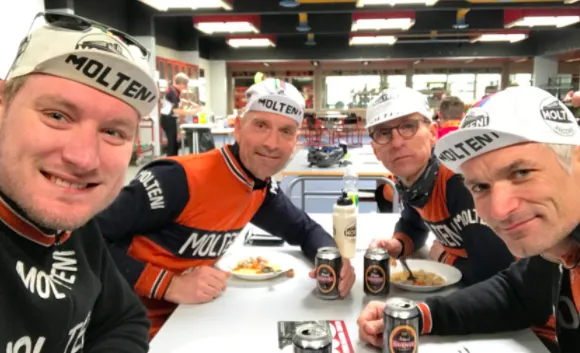
Træningslejren gav bonus. Der blev kort efter kørt topplaceringer hjem ved både Nordfyn Rundt og Vadehavsløbet.
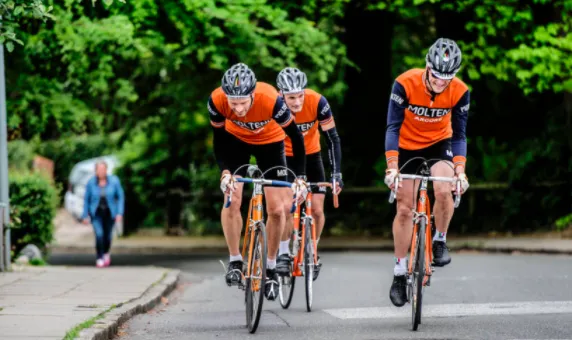
Og dér midt i foråret – blev der også sat en verdensrekord. Kongerne af Kiddesvej kørte 100 gange Kiddesvej.
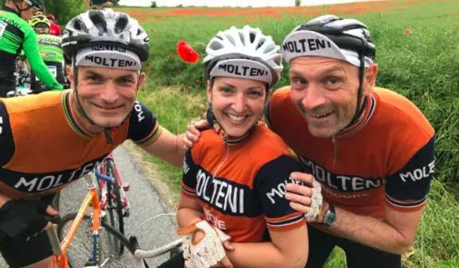
Sommeren kom og Det Orange Eksprestog var ude og køre holdløb. Det blev dramatisk. Men også smukt.
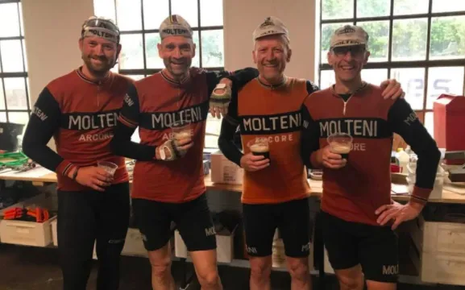
Men sommerregnen skulle der en del mørkt belgisk øl til at skylle ned.
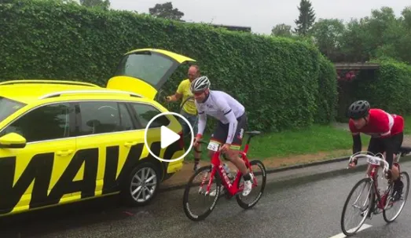
Imens satte Mark Petersen Jens Voigt på plads ved Cykelstafetten Spar Nord.
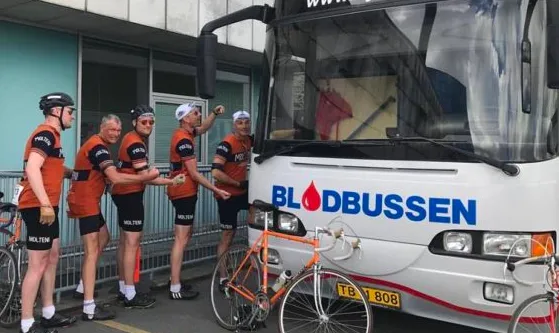
Ved Fyen Rundt gav holdet alt for, at Kaptajnen kunne køre en topplacering hjem. Det kostede naturligvis en gang friskt blod efterfølgende.
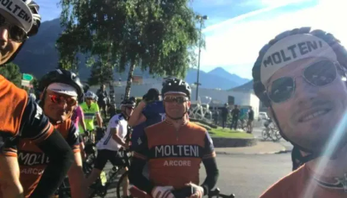
Mens alle andre tog på sommerferie, sendte Squadra Molteni ryttere til L’Etape du Tour. Her blev der uddelt lussinger til de fransk alper.
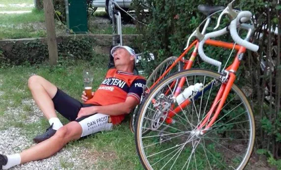
Samtidig var Carsten Jacobsen indrullet i en kæmpe skandale i Dolomitterne. Skuffelsen over en manglende lægeerklæring måtte drikkes væk.
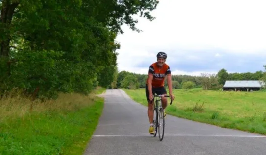
Ved starten af anden halvdel af sæsonen sikrede Peter Meinert Squadra Molteni en flot 2. plads ved Grand Prix Vejle Ådal.
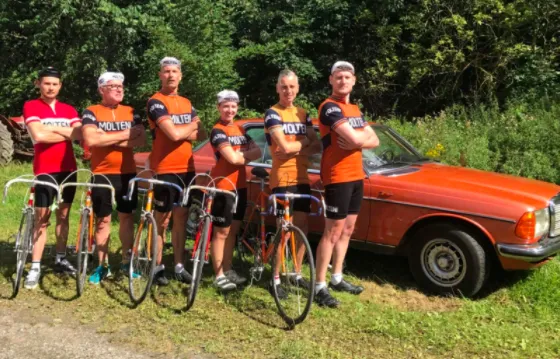
Og Mark Petersen vandt efter en stærk holdindsats for 2. år i træk Kroppedal Grandprix.
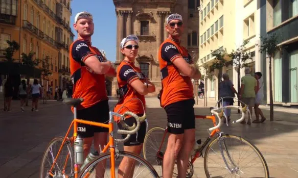
Kaptajnen, løjtnanten og Donna Maria blev kort efter sendt til det sydlige Spanien. Her smadrede de alt og alle i La Acero Vuelta.
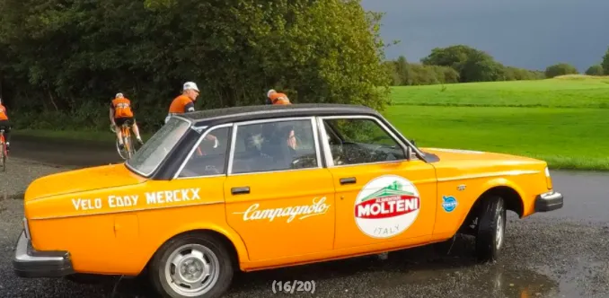
Senere tilbage i Danmark dukkede Klaus Kjærsgaard op, som sendt fra himlen – med den gudindesmukke Molteni Volvo 242.
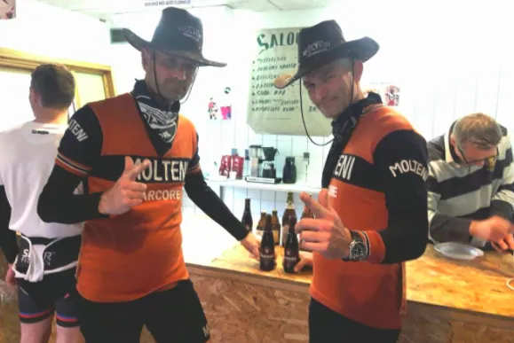
Da efteråret kom sendte Squadra Molteni Grane “Rattlesnake” og Niels “SixShooter” til cowboy-cross.
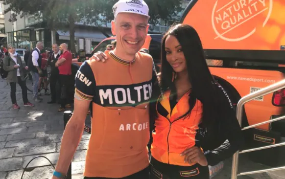
Og Jens Langergaard og Kristian Blume blev sendt til Lombardiet Rundt, hvor de gjorde et stort indtryk. Ikke mindst hos damerne.
Nu er det efterår. Foran os venter den traditionsrige træningssamling og sæsonafslutning omkring Vejle.
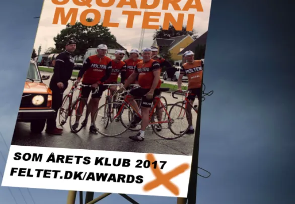
Og så er der lige noget med en nominering ved Danish Bike Award.
Stem på os her http://www.feltet.dk/awards, hvis I vil.

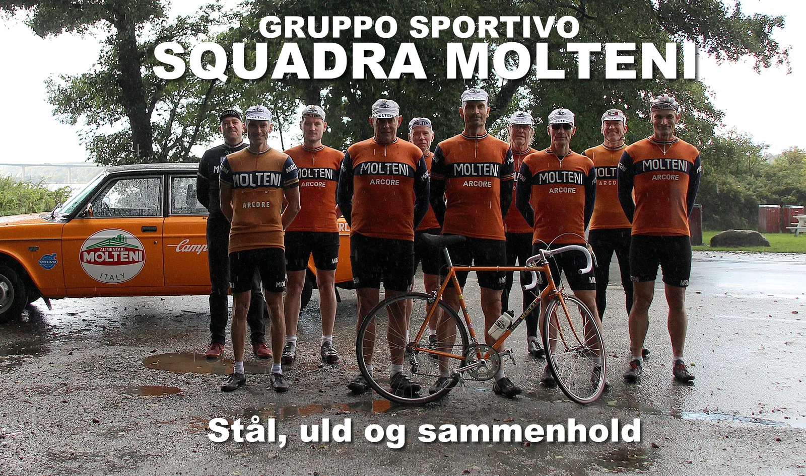
Tak for i år.
Vi kommer stærkt og ufortrødent tilbage i 2018. Og vi har store planer …
Forza Molteni